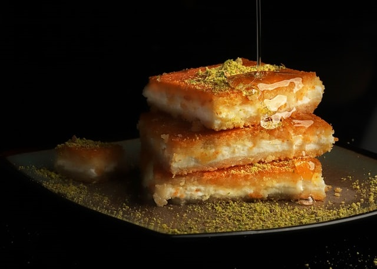
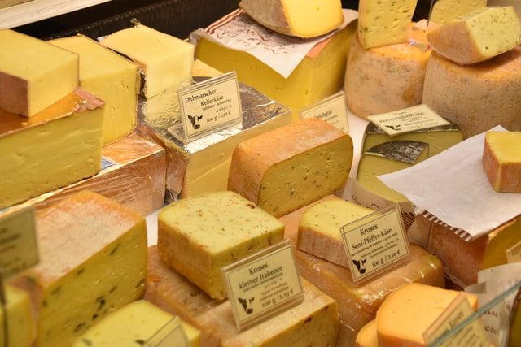
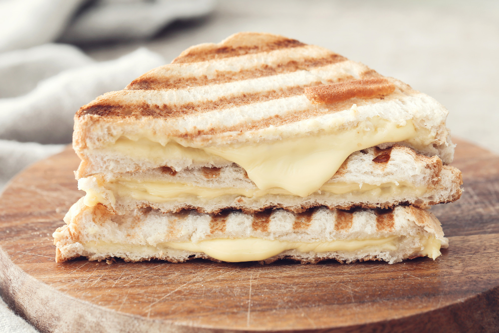

Recipes
What makes a sandwich?
Traditionally, a sandwich is defined as any food afixed between two slices of bread. By extension, a grilled cheese sandwich is any type of cheese betwixt two pieces of bread. As such, grilled cheese sandwiches are pretty flexible with their composition and ingredients.
Some ideas about grilled cheeses
The grilled cheese is a rather conceptual sandwich, there's no one true way to make a grilled cheese but there's plenty of ways to no make a grilled cheese. As such, consider the following:
- Always use a melting cheese, not all cheeses are the same, and some melt better than others.
- Use the right bread, some breads toast better than others. Breads with a high oil content will likely have better results.
- Grease the pan! Butter, grease, oil, mayo, doesn't matter. Just have some oil to cooke with!
- Low and slow, cook the sandwich at a low temp with a lid to ensure proper cheese melting.
- A neglectful man is a man with no sandwich. Keep an eye on it while it's cooking!
- Condiments are a nice addon, but the cheese should always be the star of the show.
- Side it up, a bowl of soup takes your grilled cheese to a new level of good.

A grilled cheese sandwich
ingredients: Bread Cheese Butter A pan to cook with Step 1: Heat pan to low, place cheese between bread Step 2: once pan has come to heat, butter pan and add sandwich Step 3: cover pan and allow bread to toast Step 4: flip sandwich once bread has reached desired color Step 5: repeat for next Side Step 6: remove sandwich from pan once cheese has melted, cut diagonally and serve warm
Image courtesy of freepik.com